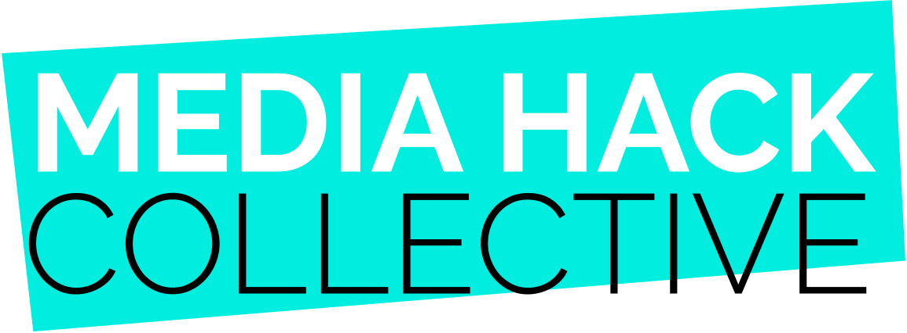

Amy Kenyon, PhD
Freelance Medical Writer
An expert in genomic medicine, I produce high-quality medical content for HCPs, patients, and commercial teams, focusing on:
- Genetics
- Genomics
- Gene-editing (e.g., CRISPR)
‘Amy is a superb and versatile writer. In addition to her long scientific pedigree, she also knows how to target texts to the needs of different audiences. Whether she writes for medical journals, patient websites or prepares articles with a more journalistic slant, they get top marks. We are very lucky and to have her on our team of freelancers.’
‘Quality medical writing requires in-depth scientific understanding coupled with excellent communication skills and attention to detail. Amy has all of the above and consistently delivers outstanding work — making for happy clients!’
Proud to work with

An expert in genomic medicine, producing content that is powerful enough to inspire change for good.
More about me